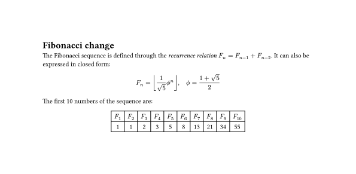

Type Pill Examples
Typst Example

= Fibonacci change
The Fibonacci sequence is defined through the
_recurrence relation_ $F_n = F_(n-1) + F_(n-2)$.
It can also be expressed in closed form:
$ F_n = floor(1 / sqrt(5) phi.alt^n), quad phi.alt = (1 + sqrt(5)) / 2 $
#let count = 10
#let nums = range(1, count + 1)
#let fib(n) = (
if n <= 2 { 1 }
else { fib(n - 1) + fib(n - 2) }
)
The first #count numbers of the sequence are:
#align(center, table(
columns: count,
..nums.map(n => $F_#n$),
..nums.map(n => str(fib(n))),
))

[hello world]
if 1 == 2 {
[this doesn't feel right]
} else {
[this _does_ seem right]
}
parbreak()
import "/data.typ": a
a
hello world
This text comes from the template
Parameter Definition
Some other information that is totally useful.